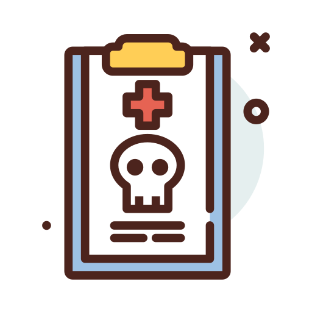
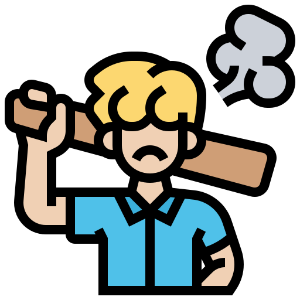
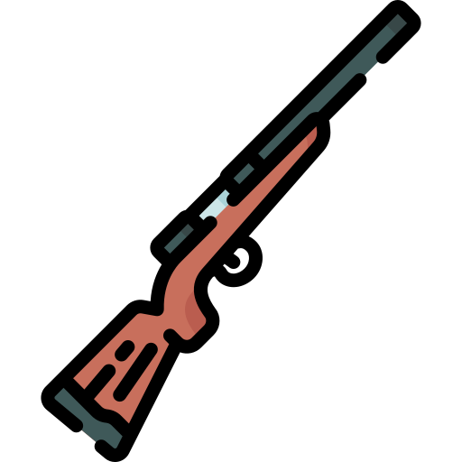

Metas

Meta 16.1
Reduzir significativamente todas as formas de violência e as taxas de mortalidade relacionada em todos os lugares

Meta 16.2
Acabar com abuso, exploração, tráfico e todas as formas de violência e tortura contra crianças

Meta 16.3
Promover o Estado de Direito, em nível nacional e internacional, e garantir a igualdade de acesso à justiça para todos

Meta 16.4
Até 2030, reduzir significativamente os fluxos financeiros e de armas ilegais, reforçar a recuperação e devolução de recursos roubados e combater todas as formas de crime organizado